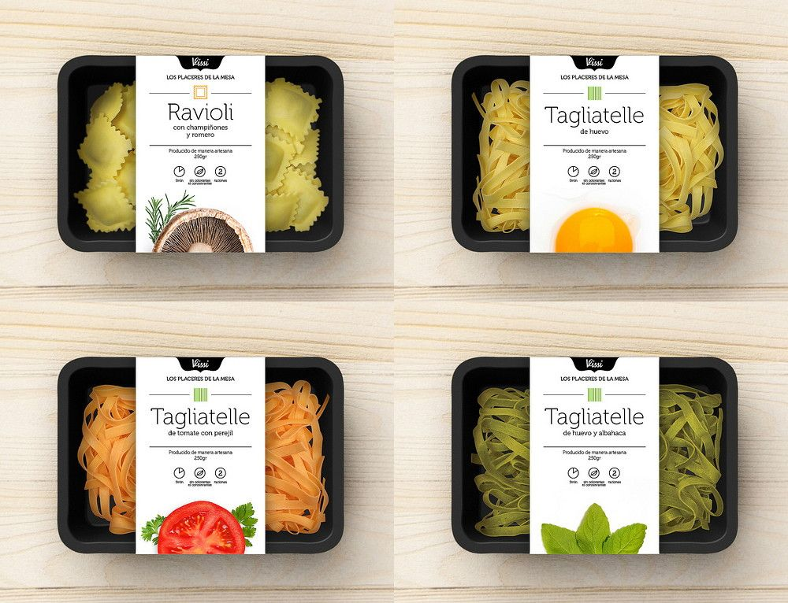

Nuestros Servicios
Comida a Domicilio Personalizada
Ofrecemos planes de comida a domicilio completamente personalizados, diseñados para satisfacer tus necesidades nutricionales y preferencias alimenticias. Nuestros chefs preparan comidas frescas y deliciosas, entregadas directamente a tu puerta.
Plan de Pérdida de Peso
Nuestro plan de pérdida de peso está diseñado para ayudarte a alcanzar tus objetivos de manera saludable y sostenible. Incluye comidas balanceadas, bajas en calorías, pero ricas en nutrientes esenciales para mantener tu energía durante todo el día.
Plan de Ganancia Muscular
El plan de ganancia muscular está creado para aquellos que buscan aumentar su masa muscular y mejorar su rendimiento físico. Incluye comidas ricas en proteínas y carbohidratos complejos para apoyar el crecimiento y la recuperación muscular.